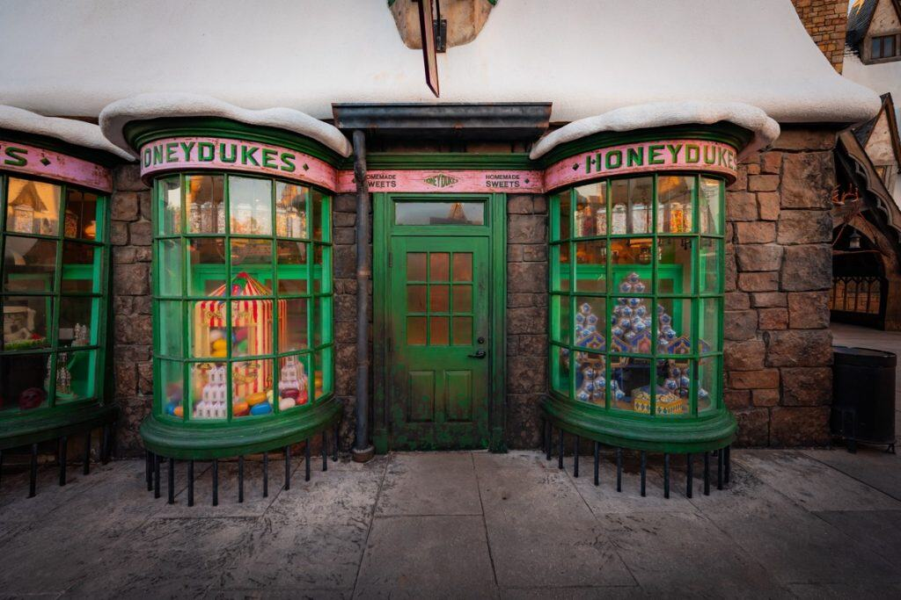
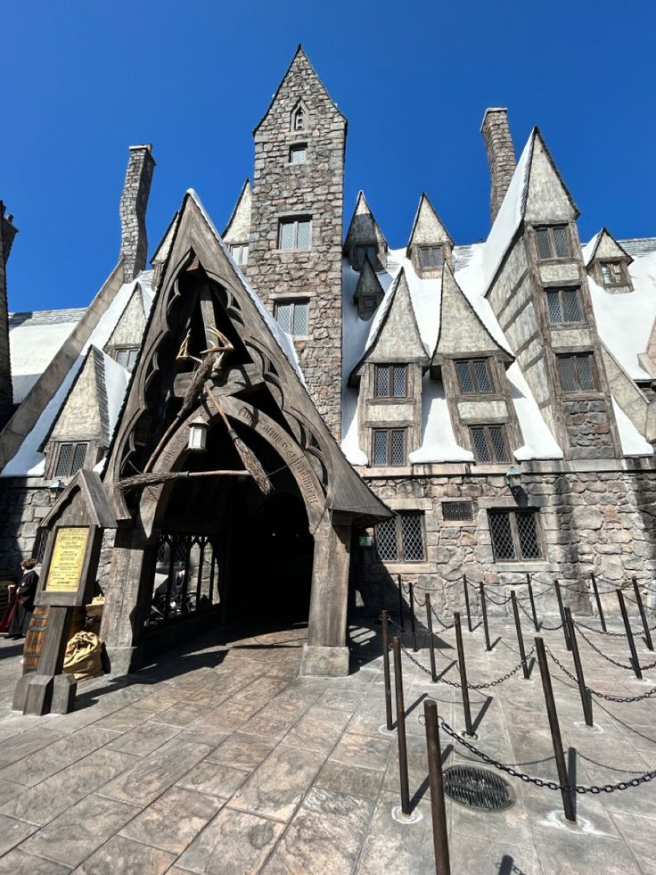
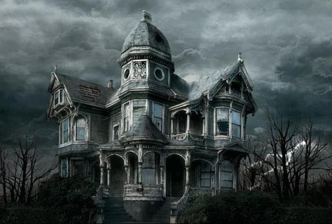
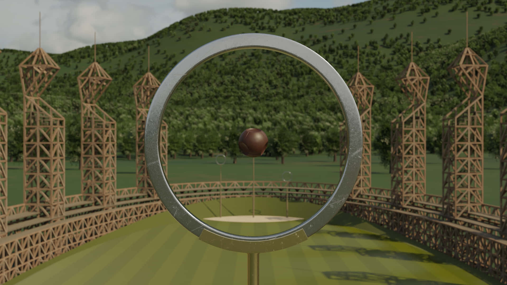
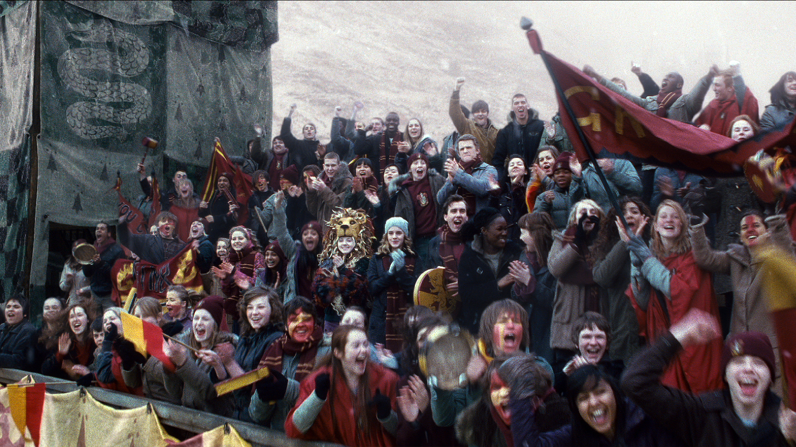

Honeydukes
La famosa tienda de golosinas y caramelos mágicos, favorita de los estudiantes.

El único pueblo de Gran Bretaña habitado exclusivamente por magos y seres mágicos, sin ningún tipo de presencia muggle. Fundado según la leyenda por el mago medieval Hengist de Woodcroft, está situado en las tierras altas de Escocia, muy cerca del Colegio Hogwarts de Magia y Hechicería.
La famosa tienda de golosinas y caramelos mágicos, favorita de los estudiantes.

El concurrido pub conocido por servir la tradicional cerveza de mantequilla.

Considerada el edificio más embrujado de Gran Bretaña.

El deporte más popular de la comunidad mágica, donde dos equipos de 7 jugadores compiten por la victoria montados en escobas voladoras.

